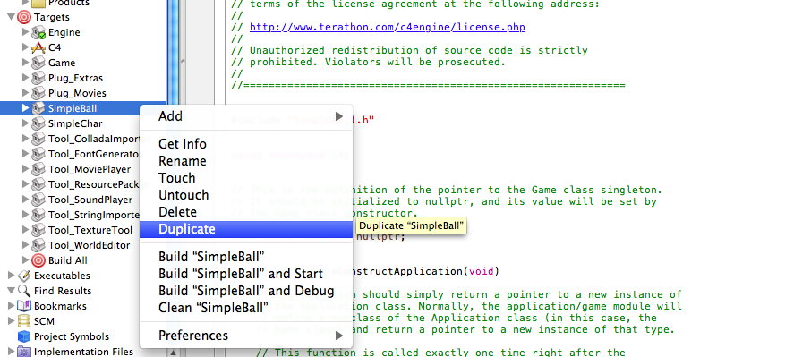
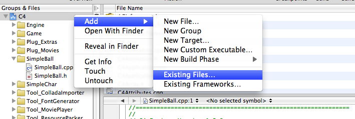

Introduction with Xcode
From C4 Engine Wiki

| Obsolete Article
Some or all of the information on this page is obsolete and needs to be updated. |
This tutorial demonstrates how to create and set up a new .dylib target in XCode v3.2. C4 does not support XCode 4. We will create a simple game that shows the text Hello World on the screen. You can use these steps to create your own .dylib to include in C4.
Before starting this tutorial, make sure you can build the C4 source code. See Building the C4 Engine#Building under Mac OS X. For directions on installing C4, see Getting Started.
Contents |
Setting up a new target in the C4 project
XCode uses targets to control different build processes. You collect these targets in a project. Looking at the XCode project included in C4, you can see the different targets that are already defined. SimpleBall and SimpleChar are two sample targets that are already perfectly set up to be loaded into C4 as .dylibs. This means all we have to do to create a new .dylib target is copy one of these.
Copy SimpleBall .dylib
Right-click on the SimpleBall target and choose Duplicate.

This creates SimpleBall copy. Right-click on SimpleBall copy and choose Rename, type in Hello, and hit Enter.
We have renamed the target, but we still need to edit one of the build settings that controls the name of the produced .dylib. Right-click on Hello and choose Get Info. You should see the Build info window. Scroll down to Product Name and change it to Hello (Make sure the Configuration drop-down at the top is set to All Configurations). Close the window to save the settings.
Finally, we need to get that old code out of there, so open the Hello target, open Compile Sources, right-click on SimpleBall.cpp and choose Delete. Don't worry, this only deletes from the build settings, not the actual file.
You now have a blank .dylib target that you can add your own code to. Hooray!
Add Files
Now that most of the setup is done, it's time to create our files. I like to keep all of my files in their own separate folder in the Finder, so we will make the folder first, and then add it as a group to our project.
Make a folder called Hello in XCode/C4 (where C4.xcodeproj is located). Now go into the XCode project, right-click on the top C4 under Groups & Files, select Add > Add Existing Files..., and choose your new folder.

Check Hello under Add to targets in the window that pops up (leave Build All checked). The cool thing about doing it this way is that the files you add to this group will also be added to the folder, and any files added to the folder, will be added to your .dylib target.
Code
To create our C++ files, right-click the new Hello group and choose Add > New File.... Select C++, click Next, and name the file Hello.cpp. Notice that XCode automatically creates Hello.h, puts the files in the correct Finder folder, and adds them to the target.
Once our files are created, we want to add the following code. For the fun of it will add our own namespace so we don't pollute C4.
Hello.h:
#ifndef Hello_h #define Hello_h #include "C4Application.h" #include "C4Interface.h" extern "C" { C4MODULEEXPORT C4::Application* ConstructApplication(); } using namespace C4; namespace HW { class Game : public Singleton<Game>, public Application { public: Game(); ~Game(); }; extern Game* game; } #endif // Hello_h
Hello.cpp:
#include "Hello.h" using namespace C4; using namespace HW; Game* HW::game = 0; C4::Application* ConstructApplication() { return (new Game); } Game::Game() : Singleton<Game>(game) { // Creates message without using tags TextWidget *pText = new TextWidget(Vector2D(80.0F, 16.0F), "Hello World!"); pText->SetFont("font/Bold"); pText->SetWidgetColor(ColorRGBA(0.0f, 0.0f, 1.0f)); pText->SetWidgetPosition(Point3D(50, 50, 0)); // Adds widget to the screen TheInterfaceMgr->AddWidget(pText); // Report a message to the log file Engine::Report("<br /><div>Hello World!</div>", kReportLog); } Game::~Game() { }
Configure Variables
Now we can build our project, so build it and all should be well. You should see Hello.dylib under the Products group. But we're not quite done yet. We need to change the C4 configuration files so that C4 knows to load our application when it starts up. To do this navigate to your base C4 directory. Once there navigate to the "Data" directory, and then to the "Game" directory. Open up the file game.cfg and change "Game" to the name of your application ("Hello" in our case) for the following variables.
$gameModuleName = "Hello";
Run The Game
Ok, now we're ready to run our Hello game. Navigate to the location of the C4.app (Should be in the root directory of C4 or the parent directory of the XCode folder), and run it.

Checking The Log
One thing left, we want to see the log message that we wrote in our code. To know where your C4Log.html file is, see File Locations. Once you open C4Log.html, scroll to the very bottom. You should see a section called Application Module. Within there you will see our log message "Hello World!".
Setting up a new project
TODO